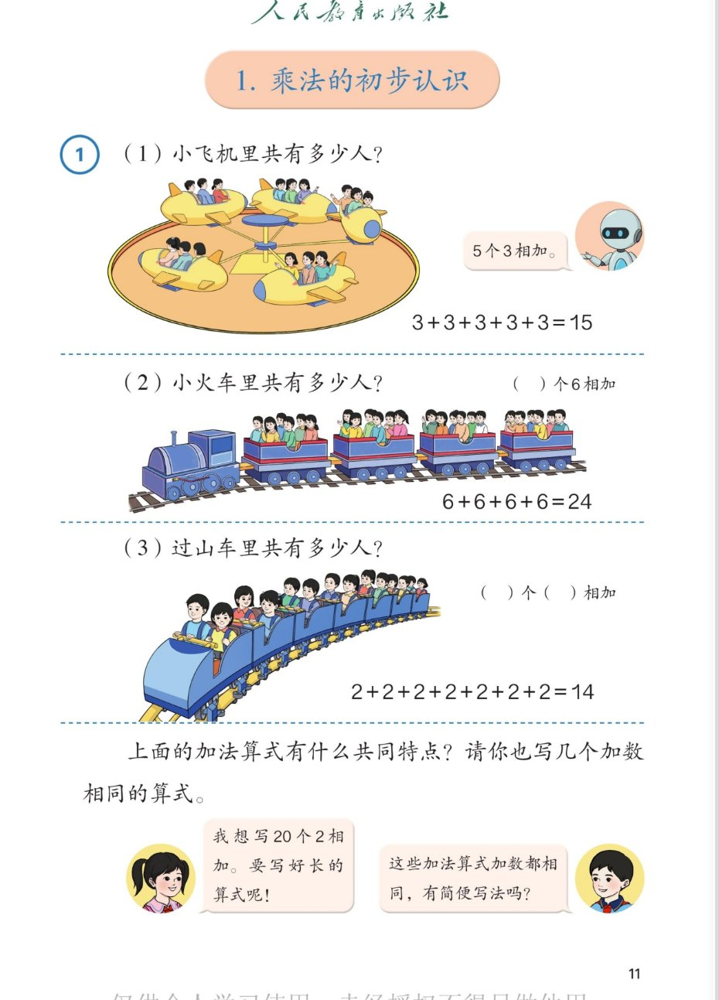

✈️ 1~6的表内乘法 · 课本第 11 页 · 例1 乘法的初步认识
人教版《数学》二年级上册 · 有声图文带读 · 先想后看解析
题数
6
认知
2
强化
3
拓展
1
本页重点
几个几相加
🎧 分两步学：
① 解析教材图片
——纯声音读图，读到哪一块哪一块闪动提示；关键处先倒计时让你思考，再在图片下方给出解析并朗读。
② 分层提问练习
——六道分层题（认知 / 强化 / 拓展），先思考再展开解析、朗读参考答案；这一步不再回到图片。
也可以随时点任意一句话、图上任意一块单独听；点课本文字卡还会展开答案。
教材图片（点块听读，读到哪块哪块闪）

📖 人教版《数学》二年级上册 · 课本第 11 页 · 图片仅供个人学习，版权归人民教育出版社所有
🤔 想一想（点我可跳过）
课本的文字（点句子：听读 + 看答案）
课本例题(1)
（1）小飞机里共有多少人？
看答案 ▾
看图数：
一共
5
架小飞机，每架坐
3
人 →
5 个 3 相加
。
加法算式：
3+3+3+3+3=15。
机器人的气泡
5 个 3 相加。
看答案 ▾
「几个几相加」的说法：
5 个 3 相加 = 相同加数是
3
，加数的个数是
5
。
这句话是通往乘法的桥——下一页就教我们把它简写成
3×5
。
课本例题(1)
3+3+3+3+3=15
看答案 ▾
读算式：
5 个 3 连加，和是 15。数一数算式里的 3：
正好 5 个
，和图上 5 架飞机一一对应。
课本例题(2)
（2）小火车里共有多少人？（ ）个 6 相加
看答案 ▾
看图数：
4
节车厢，每节坐
6
人 → 括号里填
4
，是
4 个 6 相加
。
加法算式：
6+6+6+6=24。
课本例题(2)
6+6+6+6=24
看答案 ▾
自查：
算式里有
4 个 6
，和车厢节数对上；得数 24 就是火车里的总人数。
课本例题(3)
（3）过山车里共有多少人？（ ）个（ ）相加
看答案 ▾
看图数：
过山车每排坐
2
人，一共
7
排 →
7 个 2 相加
。
第一个括号填
7
（个数），第二个括号填
2
（相同的加数）。
课本例题(3)
2+2+2+2+2+2+2=14
看答案 ▾
读算式：
7 个 2 连加，和是 14。
小心别数漏
——算式里的 2 有 7 个，和过山车的排数对应。
课本问题
上面的加法算式有什么共同特点？请你也写几个加数相同的算式。
看答案 ▾
共同特点：
加数都相同
（5 个 3、4 个 6、7 个 2）。
自己写（参考）：
2+2+2=6（3 个 2 相加）；1+1+1+1=4（4 个 1 相加）；5+5+5=15（3 个 5 相加）。写得合理都算对。
小女孩的气泡
我想写 20 个 2 相加，要写好长的算式呢！
看答案 ▾
体会麻烦：
20 个 2 连加，算式要写
20 个 2、19 个加号
，又长又容易写漏。
加数个数越多，加法算式越麻烦——
这正是需要新写法的理由
。
小男孩的气泡
这些加法算式加数都相同，有简便写法吗？
看答案 ▾
答案预告：
有！这种
加数相同
的加法，可以用
乘法
表示。下一页我们就学：5 个 3 相加写成
3×5=15
。
分层提问练习（先想后看解析）
✈️
认知
小飞机里共有多少人？是几个几相加？
看解析
🤔 想一想
解析：
列式：
3+3+3+3+3=15
5 架飞机、每架 3 人 →
5 个 3 相加
。
🚂
认知
小火车、过山车分别是几个几相加？和是多少？
看解析
🤔 想一想
解析：
小火车：
4 个 6 相加
，6+6+6+6=
24
过山车：
7 个 2 相加
，2+2+2+2+2+2+2=
14
💡 先说清"几个几"，再写加法算式，不容易数漏
🧩
强化
三道加法算式有什么共同特点？为什么重要？
看解析
🤔 想一想
解析：
共同特点：加数都相同
5 个 3、4 个 6、7 个 2 —— 加数不变，只是个数不同
为什么重要：
加数相同的加法才能简写成乘法
✍️
强化
请你写两个加数相同的算式，并说说是几个几相加。
看解析
🤔 想一想
解析（开放题）：
例一：
2+2+2=6，3 个 2 相加。
例二：
5+5+5=15，3 个 5 相加。
🌈 加数相同、能说清"几个几"就算对
😮
强化
20 个 2 相加用加法写会怎样？麻烦在哪里？
看解析
🤔 想一想
解析：
要写
20 个 2
、
19 个加号
，算式非常长
写得慢、
容易漏写或多数
所以数学家发明了简便写法——
乘法
（下一页揭晓）
🚀
拓展
在生活中找一个「几个几相加」的例子，说出加法算式。
看解析
🤔 想一想
解析（开放题）：
例一：
每盘 5 个苹果，3 盘 → 5+5+5=15（3 个 5 相加）。
例二：
每张桌子坐 4 人，3 张桌子 → 4+4+4=12（3 个 4 相加）。
🌈 例子真实、能列出加数相同的算式就算对
① 解析教材图片
② 分层提问练习
⏹ 停止
纯声音 + 高亮跟随 · 想好才出解析
← 返回导航